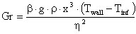

Grashof
Path: CARNOT/Basic/Hydraulics
Purpose:
The block calculates the Grashof number.
Description:
The block calculates the Grashof number according to the inputs.
The Grashof number is defined by the equation

with:
| Symbol | used for | unit |
| b | volumetric coefficient of expansion | 1/K |
| g | gravity constant | m/s2 |
| Twall | temperature of the wall or surface | °C |
| Tinf | temperature in infinite distance | °C |
| r | density of the fluid | kg/m3 |
| x | characteristic length of the component | m |
| h | dynamic viscosity ( = density * kinematic_viscosity ) | N*s/m |
The block calls the function "grashof" in the CARNOT
Carlib Library where the calculation is
carried out. The material properties functions can also be called directly from
the command window by typing
grashof(Twall, Tinf, pressure, fluidtype, fluidmix)
Instead of the italic variables the actual value of
the respective property has to be entered. This is possible for the Carlib
functions density, thermal_conductivity, heat_capacity, kinematic_viscosity,
prandtl, vapourpressure and saturationtemperature. For more information about
the function type
help grashof
to the workspace as for any other MATLAB function.
For more information of the fluidtype and fluidmix see above
FluidEnum
Input:
| Twall | : | wall temperature in °C |
| Tinf | : | temperature in infinite distance in °C |
| p | : | pressure in Pa |
| Fluid_Type | : | fluid type, see FluidEnum for the definition |
| Fluid_Mix | : | fluid mixture, see FluidEnum for the definition |
| dimension | : | characteristic dimension of the component im m |
Output:
| Gr | : | Grashof number |
Characteristics:
| Direct Feedthrough | : | Yes |
| Sample Time | : | Inherited from driving block |
| Vectorized | : | No |